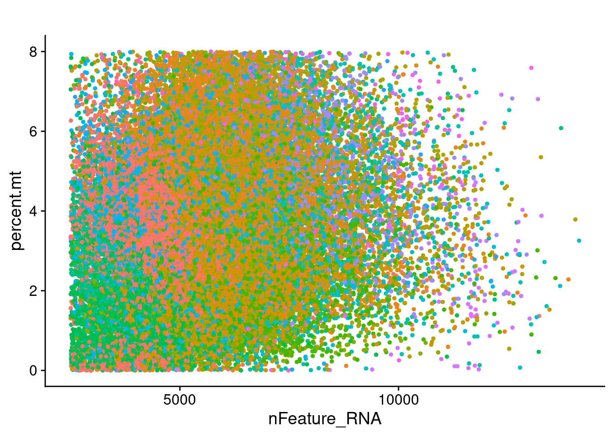
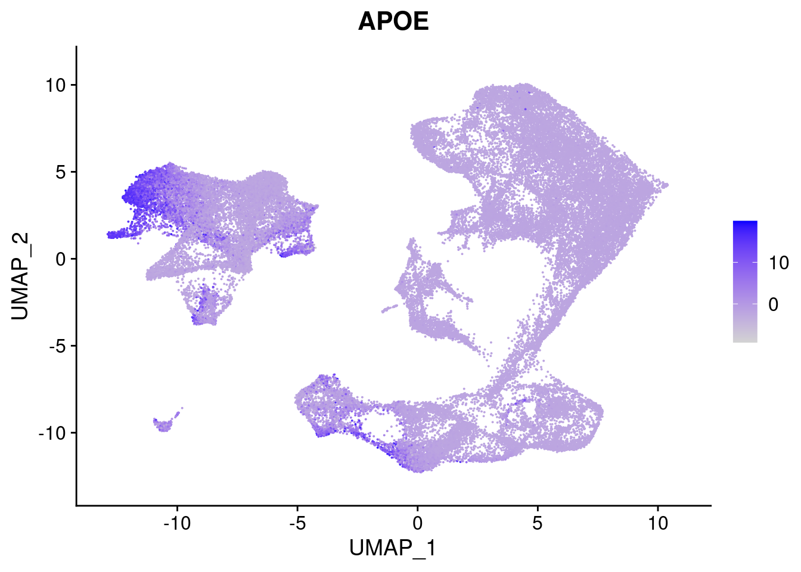

merge_full_data
Ben Umans
2021-07-28
Last updated: 2021-08-20
Checks: 6 1
Knit directory: Organoid_Stress_Pilot/
This reproducible R Markdown analysis was created with workflowr (version 1.6.2). The Checks tab describes the reproducibility checks that were applied when the results were created. The Past versions tab lists the development history.
The R Markdown file has unstaged changes. To know which version of the R Markdown file created these results, you’ll want to first commit it to the Git repo. If you’re still working on the analysis, you can ignore this warning. When you’re finished, you can run wflow_publish to commit the R Markdown file and build the HTML.
Great job! The global environment was empty. Objects defined in the global environment can affect the analysis in your R Markdown file in unknown ways. For reproduciblity it’s best to always run the code in an empty environment.
The command set.seed(20210705) was run prior to running the code in the R Markdown file. Setting a seed ensures that any results that rely on randomness, e.g. subsampling or permutations, are reproducible.
Great job! Recording the operating system, R version, and package versions is critical for reproducibility.
Nice! There were no cached chunks for this analysis, so you can be confident that you successfully produced the results during this run.
Great job! Using relative paths to the files within your workflowr project makes it easier to run your code on other machines.
Great! You are using Git for version control. Tracking code development and connecting the code version to the results is critical for reproducibility.
The results in this page were generated with repository version cd56fef. See the Past versions tab to see a history of the changes made to the R Markdown and HTML files.
Note that you need to be careful to ensure that all relevant files for the analysis have been committed to Git prior to generating the results (you can use wflow_publish or wflow_git_commit). workflowr only checks the R Markdown file, but you know if there are other scripts or data files that it depends on. Below is the status of the Git repository when the results were generated:
Ignored files:
Ignored: .DS_Store
Ignored: .Rhistory
Ignored: data/.DS_Store
Ignored: data/fastq/
Ignored: output/.DS_Store
Ignored: output/YG-BU-01_human/
Ignored: output/YG-BU-02_human/
Ignored: output/YG-BU-03_human/
Ignored: output/YG-BU-04_human/
Ignored: output/YG-BU-05_human/
Ignored: output/YG-BU-06_human/
Ignored: output/YG-BU-07_human/
Ignored: output/YG-BU-08_human/
Ignored: output/YG-BU-09_human/
Ignored: output/YG-BU-10_human/
Ignored: output/YG-BU-11_human/
Ignored: output/fitmm0.neuron.RDS
Ignored: output/fitmm1.neuron.RDS
Ignored: output/fitmm2.neuron.RDS
Ignored: output/fitmm3.neuron.RDS
Ignored: output/fitmm4.neuron.RDS
Ignored: output/fitmm5.neuron.RDS
Ignored: output/fitmm6.neuron.RDS
Ignored: output/fitmm7.neuron.RDS
Ignored: output/fitmm8.neuron.RDS
Ignored: output/merged_full_dataset.RDS
Ignored: output/neuron0_oxidation_table.csv
Ignored: output/neuron1_oxidation_table.csv
Ignored: output/neuron2_oxidation_table.csv
Ignored: output/neuron3_oxidation_table.csv
Ignored: output/neuron4_oxidation_table.csv
Ignored: output/neuron5_oxidation_table.csv
Ignored: output/neuron6_oxidation_table.csv
Ignored: output/neuron7_oxidation_table.csv
Ignored: output/neuron8_oxidation_table.csv
Ignored: output/organoid.combined.full.sct.neuron.RDS
Ignored: output/organoid.combined.sct.neuron.markers.RDS
Ignored: output/organoid.combined.sct03.RDS
Ignored: output/organoid.combined.sct05.RDS
Ignored: output/organoid.combined.sct1.RDS
Untracked files:
Untracked: analysis/cell_cycle_full.Rmd
Untracked: analysis/variance_estimation_full.Rmd
Untracked: data/Snakefile_cellranger
Untracked: data/all.vcf.bed
Untracked: data/australia.rds
Untracked: data/cellranger.38.dict
Untracked: data/cluster.json
Untracked: data/config.yaml
Untracked: data/environment.yaml
Untracked: data/exclude_fulldata.rds
Untracked: data/human.unsorted.vcf
Untracked: data/human.vcf
Untracked: data/human.vcf.bed
Untracked: data/library9.rds
Untracked: data/log/
Untracked: data/mysterycell.rds
Untracked: data/organoid.combined.sct03.neuron.RDS
Untracked: data/organoid_combined_sct03.RDS
Untracked: data/reheaded.vcf
Untracked: data/snakelog.out
Untracked: data/snakemake_cellranger.batch
Untracked: data/sorted.vcf
Untracked: data/submit.sh
Untracked: data/unsorted.vcf
Untracked: data/unsorted_header
Untracked: data_S2/
Unstaged changes:
Modified: .gitignore
Modified: analysis/combine_experiments.Rmd
Modified: analysis/de_full.Rmd
Modified: analysis/merge_full_data.Rmd
Modified: analysis/precheck.Rmd
Modified: analysis/remove-mesenchyme.Rmd
Modified: analysis/variance-estimation.Rmd
Note that any generated files, e.g. HTML, png, CSS, etc., are not included in this status report because it is ok for generated content to have uncommitted changes.
These are the previous versions of the repository in which changes were made to the R Markdown (analysis/merge_full_data.Rmd) and HTML (docs/merge_full_data.html) files. If you’ve configured a remote Git repository (see ?wflow_git_remote), click on the hyperlinks in the table below to view the files as they were in that past version.
| File | Version | Author | Date | Message |
|---|---|---|---|---|
| html | cd98404 | Ben Umans | 2021-07-31 | Build site. |
| Rmd | 5d8afa5 | Ben Umans | 2021-07-30 | Building all files for initial upload |
Introduction
I have now received more extensive sequencing data from these libraries and run the combined data (from the S1 and S2 chips) through cellranger together to generate combined data, and through demuxlet to resolve each library into the 3 constituent individuals. Here, I will combine the (now much larger) Seurat objects like before, integrate them, and create both a combined total object and a combined neural-specific object.
Combined Seurat objects
Helpfully, the demuxlet pipeline we have preprocesses each library with SCTransform and saves a Seurat object, so combining them in much easier.
pacman::p_load(edgeR, variancePartition, BiocParallel, limma)
library(Seurat)
library(tidyverse)
library(ggplot2)
library(RColorBrewer)
library(cowplot)
library(knitr)control1 <- readRDS(file = "data_S2/YG-BU-01_human/obj.rds")
#replace the names of all individuals with the actual line names
oldnames1 <- control1$individual
newnames1 <- str_replace(oldnames1, "SCM-10", "28126") %>% str_replace("SCM-12", "20157") %>% str_replace("SCM-13", "23555")
control1 <- AddMetaData(control1, newnames1, col.name = "cell.line")
control1$replicate <- "2"
control1$stim <- "control"
oxid1 <- readRDS(file = "data_S2/YG-BU-02_human/obj.rds")
#replace the names of all individuals with the actual line names
oldnames2 <- oxid1$individual
newnames2 <- str_replace(oldnames2, "SCM-10", "28126") %>% str_replace("SCM-12", "20157") %>% str_replace("SCM-13", "23555")
oxid1 <- AddMetaData(oxid1, newnames2, col.name = "cell.line")
oxid1$replicate <- "2"
oxid1$stim <- "oxidation"
pff1 <- readRDS(file = "data_S2/YG-BU-03_human/obj.rds")
#replace the names of all individuals with the actual line names
oldnames3 <- pff1$individual
newnames3 <- str_replace(oldnames3, "SCM-10", "28126") %>% str_replace("SCM-12", "20157") %>% str_replace("SCM-13", "23555")
pff1 <- AddMetaData(pff1, newnames3, col.name = "cell.line")
pff1$replicate <- "2"
pff1$stim <- "pff"
control2 <- readRDS(file = "data_S2/YG-BU-06_human/obj.rds")
#replace the names of all individuals with the actual line names
oldnames6 <- control2$individual
newnames6 <- str_replace(oldnames6, "SCM-10", "28126") %>% str_replace("SCM-12", "20157") %>% str_replace("SCM-13", "23555")
control2 <- AddMetaData(control2, newnames6, col.name = "cell.line")
control2$replicate <- "3"
control2$stim <- "control"
oxid2 <- readRDS(file = "data_S2/YG-BU-07_human/obj.rds")
#replace the names of all individuals with the actual line names
oldnames7 <- oxid2$individual
newnames7 <- str_replace(oldnames7, "SCM-10", "28126") %>% str_replace("SCM-12", "20157") %>% str_replace("SCM-13", "23555")
oxid2 <- AddMetaData(oxid2, newnames7, col.name = "cell.line")
oxid2$replicate <- "3"
oxid2$stim <- "oxidation"
control3 <- readRDS(file = "data_S2/YG-BU-09_human/obj.rds")
#replace the names of all individuals with the actual line names
oldnames9 <- control3$individual
newnames9 <- str_replace(oldnames9, "SCM-10", "28126") %>% str_replace("SCM-12", "20157") %>% str_replace("SCM-13", "23555")
control3 <- AddMetaData(control3, newnames9, col.name = "cell.line")
control3$replicate <- "4"
control3$stim <- "control"
oxid3 <- readRDS(file = "data_S2/YG-BU-10_human/obj.rds")
#replace the names of all individuals with the actual line names
oldnames10 <- oxid3$individual
newnames10 <- str_replace(oldnames10, "SCM-10", "28126") %>% str_replace("SCM-12", "20157") %>% str_replace("SCM-13", "23555")
oxid3 <- AddMetaData(oxid3, newnames10, col.name = "cell.line")
oxid3$replicate <- "4"
oxid3$stim <- "oxidation"
pff3 <- readRDS(file = "data_S2/YG-BU-11_human/obj.rds")
#replace the names of all individuals with the actual line names
oldnames11 <- pff3$individual
newnames11 <- str_replace(oldnames11, "SCM-10", "28126") %>% str_replace("SCM-12", "20157") %>% str_replace("SCM-13", "23555")
pff3 <- AddMetaData(pff3, newnames11, col.name = "cell.line")
pff3$replicate <- "4"
pff3$stim <- "oxidation"
combined.data <- list(control1, control2, control3, oxid1, oxid2, oxid3, pff1, pff3)
rm(control1, control2, control3, oxid1, oxid2, oxid3, pff1, pff3)Because each of these datasets was prepared using SCTransform it should be straightforward to now integrate them. Following the guide from the Satija lab for integrating these datasets, I run the following steps:
features <- SelectIntegrationFeatures(object.list = combined.data, nfeatures = 5000, verbose = F)
combined.data <- PrepSCTIntegration(object.list = combined.data, anchor.features = features)
organoid.anchors <- FindIntegrationAnchors(object.list = combined.data, normalization.method = "SCT",
anchor.features = features)
organoid.combined.sct <- IntegrateData(anchorset = organoid.anchors, normalization.method = "SCT")
DefaultAssay(organoid.combined.sct) <- "integrated"
rm(combined.data)Evaluate QC for further filtering
The pre-processing script already subsetted to less than 15% mitochondrial reads, but this is still pretty liberal.
organoid.combined.sct <- readRDS(file = "output/merged_full_dataset.RDS")
FeatureScatter(organoid.combined.sct, feature1 = "nCount_RNA", feature2 = "percent.mt") + theme(legend.position = "none") + ggtitle("")
| Version | Author | Date |
|---|---|---|
| cd98404 | Ben Umans | 2021-07-31 |
FeatureScatter(organoid.combined.sct, feature1 = "nCount_RNA", feature2 = "nFeature_RNA") + theme(legend.position = "none") + ggtitle("")
| Version | Author | Date |
|---|---|---|
| cd98404 | Ben Umans | 2021-07-31 |
FeatureScatter(organoid.combined.sct, feature1 = "nFeature_RNA", feature2 = "percent.mt") + theme(legend.position = "none") + ggtitle("")
| Version | Author | Date |
|---|---|---|
| cd98404 | Ben Umans | 2021-07-31 |
organoid.combined.sct@meta.data %>%
ggplot(aes(x=percent.mt)) +
geom_freqpoly() +
ggtitle("Mitochondrial read percent per cell")
| Version | Author | Date |
|---|---|---|
| cd98404 | Ben Umans | 2021-07-31 |
15% is not a terrible cutoff, but we could easily do 8% and not lose anything worth missing. Let’s also check the number of genes detected, understanding that with low-pass sequencing there’s a lot less data here.
organoid.combined.sct@meta.data %>%
ggplot(aes(x=nFeature_RNA)) +
geom_freqpoly() +
ggtitle("Number of genes per cell")`stat_bin()` using `bins = 30`. Pick better value with `binwidth`.
| Version | Author | Date |
|---|---|---|
| cd98404 | Ben Umans | 2021-07-31 |
We could set a minimum threshold of 2500 genes/cell to be safe. This would certainly hit some clusters, which might actually be synthetic owing to their low gene counts
organoid.combined.sct <- subset(organoid.combined.sct, subset = percent.mt < 8 & nFeature_RNA > 2500 )Dimensionality reduction and clustering
Now, I go ahead and perform dimensionality reduction and clustering using the integrated dataset.
organoid.combined.sct <- RunPCA(organoid.combined.sct, npcs = 100)PC_ 1
Positive: COL1A1, MGP, COL3A1, LGALS1, VIM, NEAT1, COL1A2, SPARC, TIMP1, PTN
COL11A1, SFRP2, S100A10, TPM2, TPT1, IFITM3, FN1, S100A11, LDHA, CLU
OGN, FOXP2, RPL41, BNC2, PRKG1, IGFBP5, NDUFA4L2, ANXA2, TAGLN, RPLP1
Negative: STMN2, CADM2, LRRC7, RBFOX1, NRXN1, MYT1L, SYT1, SLC44A5, CCSER1, DLGAP1
CTNNA2, PTPRD, ANKS1B, DSCAM, LRRTM4, DAB1, NKAIN2, ARPP21, TUBB3, GPM6A
SOX11, OPCML, NTM, CELF2, DCX, TUBA1A, DLG2, BHLHE22, TMEM108, RTN1
PC_ 2
Positive: COL1A1, MGP, COL3A1, LGALS1, RBFOX1, COL1A2, TIMP1, STMN2, SFRP2, LRRC7
SPARC, TPM2, OGN, FN1, FOXP2, KCNQ1OT1, ARPP21, S100A11, BNC2, POSTN
NDUFA4L2, DAB1, NELL2, NKAIN2, TAGLN, TPT1, KCNQ5, FBLN1, LDHA, S100A10
Negative: AL589740.1, LINC01965, CKB, C1orf61, NKAIN3, KCNH7, PTPRZ1, CENPF, ADGRV1, SYNE2
SHROOM3, SOX2, HMGB2, TOP2A, KCNIP4, NPAS3, NUSAP1, DACH1, GFAP, MKI67
NFIA, TUBA1B, DIAPH3, GPM6B, ZBTB20, SMC4, MPPED2, DBI, QKI, DLEU2
PC_ 3
Positive: KCNQ3, SOX11, EPHA3, AL589740.1, SEMA3C, UNC5D, DOK6, CASC15, ZNF704, MLLT3
PLXNA2, MEIS2, CADM2, SOX4, PANTR1, AUTS2, CUX2, ZNF804A, PLCB1, GRAMD1B
DLEU2, SORBS2, SEZ6L, NRXN1, FRMD4A, HES6, PALMD, IGFBPL1, CDH4, TTC28
Negative: NRG3, FABP7, PCDH9, CLU, GFAP, PTPRZ1, DLG2, CSMD1, NPAS3, MEF2C
GPM6B, GRIN2B, RGS6, CKB, BCAN, METRN, C1orf61, IQCJ-SCHIP1, KAZN, DBI
MGAT4C, CSMD3, SLC35F1, GRM5, MDGA2, TTYH1, RYR2, BAALC, KHDRBS2, DAB1
PC_ 4
Positive: C1orf61, GFAP, CLU, GPM6B, BCAN, KCNQ3, NRG1, AL589740.1, SEMA3C, KCNN3
BAALC, EPHA3, METRN, TTYH1, ATP1B2, SOX11, CNN3, CKB, AQP4, PTPRZ1
NPAS3, SORBS2, EZR, DBI, AP1S2, GPR158, MEIS2, UNC5D, ID4, CRYAB
Negative: TOP2A, HMGB2, MKI67, NUSAP1, CENPF, TPX2, DIAPH3, SMC4, ASPM, KNL1
DLG2, CDK1, PRC1, DLGAP5, UBE2C, CENPE, APOLD1, GTSE1, KIF11, TUBA1B
COL1A1, KIF18B, NDC80, PTTG1, SPC25, PBK, BIRC5, KIF15, HIST1H4C, RRM2
PC_ 5
Positive: ROBO2, CNTNAP5, SOX4, DCC, NRXN3, BCL11B, DPP10, RALYL, GRIK2, GRM5
NLGN1, MARCH1, PCDH9, CNTNAP2, DOK6, TRPM3, CSMD3, PEX5L, MDGA2, DSCAML1
KCNIP4, SORCS1, KAZN, NFIA, ANK3, KCNH7, NEGR1, GRIA2, SLC24A2, SOX5
Negative: SATB2, SLC44A5, FABP7, CUX2, NKAIN2, HS6ST3, TAFA1, DLGAP2, RBFOX1, BHLHE22
PLXNA4, DPYD, FGF12, MCTP1, CCSER1, MGAT4C, SYT4, DAB1, SATB2-AS1, TENM4
ARPP21, KIF26B, ZBTB18, CDH4, DOK5, LRRC7, MIR137HG, PTPRZ1, SNTG1, CLU organoid.combined.sct <- RunUMAP(organoid.combined.sct, reduction = "pca", dims = 1:100)Warning: The default method for RunUMAP has changed from calling Python UMAP via reticulate to the R-native UWOT using the cosine metric
To use Python UMAP via reticulate, set umap.method to 'umap-learn' and metric to 'correlation'
This message will be shown once per session10:17:41 UMAP embedding parameters a = 0.9922 b = 1.11210:17:41 Read 50978 rows and found 100 numeric columns10:17:41 Using Annoy for neighbor search, n_neighbors = 3010:17:41 Building Annoy index with metric = cosine, n_trees = 500% 10 20 30 40 50 60 70 80 90 100%[----|----|----|----|----|----|----|----|----|----|**************************************************|
10:17:53 Writing NN index file to temp file /tmp/RtmpTofjHT/file1d55464bfff57
10:17:53 Searching Annoy index using 1 thread, search_k = 3000
10:18:08 Annoy recall = 100%
10:18:09 Commencing smooth kNN distance calibration using 1 thread
10:18:11 Initializing from normalized Laplacian + noise
10:18:18 Commencing optimization for 200 epochs, with 2357470 positive edges
10:19:18 Optimization finishedFeaturePlot(organoid.combined.sct, features = c("rna_PAX6", "rna_MAP2"), max.cutoff = 50)
| Version | Author | Date |
|---|---|---|
| cd98404 | Ben Umans | 2021-07-31 |
DimPlot(organoid.combined.sct, reduction = "umap", group.by = "stim")
| Version | Author | Date |
|---|---|---|
| cd98404 | Ben Umans | 2021-07-31 |
DimPlot(organoid.combined.sct, reduction = "umap", group.by = "replicate")
| Version | Author | Date |
|---|---|---|
| cd98404 | Ben Umans | 2021-07-31 |
And now we can look for clusters:
organoid.combined.sct <- FindNeighbors(organoid.combined.sct, dims=1:100)
organoid.combined.sct <- FindClusters(organoid.combined.sct, resolution=0.3)Modularity Optimizer version 1.3.0 by Ludo Waltman and Nees Jan van Eck
Number of nodes: 50978
Number of edges: 2509805
Running Louvain algorithm...
Maximum modularity in 10 random starts: 0.9473
Number of communities: 17
Elapsed time: 15 secondsDimPlot(organoid.combined.sct, reduction = "umap") + ggtitle("resolution=0.3")
| Version | Author | Date |
|---|---|---|
| cd98404 | Ben Umans | 2021-07-31 |
This is a good time to save this output.
saveRDS(organoid.combined.sct, file = "output/merged_full_dataset.RDS")Filter to just neurons
Once again, I want to check that that large cluster isn’t something I want to hold onto. Markers that Genevieve uses for chondrogenic differentiation include:
FeaturePlot(organoid.combined.sct, features = c("COL2A1", "SOX5", "SOX6", "ACAN"))
| Version | Author | Date |
|---|---|---|
| cd98404 | Ben Umans | 2021-07-31 |
Yikes!! One pole of this cell cluster still looks pretty mesenchymal, with particularly high expression of collagen 2 and aggregan, which could mean any number of things.
At the other end of this cluster I definitely saw expression of some glial genes, for instance:
FeaturePlot(organoid.combined.sct, features = c("APOE"))
| Version | Author | Date |
|---|---|---|
| cd98404 | Ben Umans | 2021-07-31 |
What could be going on here? Neural crest that started to differentiate? Consider looking at the CNCC marker trajectory that Sara Prescott worked out for her human-chimp paper, which was mostly designed for FACS but found some good markers (CD99, CD266(TNFRSF12A), CD10(MME), CD105(ENG), p75(NGFR)).
FeaturePlot(organoid.combined.sct, features = c("sct_CD99", "sct_TNFRSF12A", "sct_MME", "sct_ENG", "sct_NGFR"))
| Version | Author | Date |
|---|---|---|
| cd98404 | Ben Umans | 2021-07-31 |
FeaturePlot(organoid.combined.sct, features = c("sct_SOX10", "sct_TUBB3"))
| Version | Author | Date |
|---|---|---|
| cd98404 | Ben Umans | 2021-07-31 |
There’s pretty good expression of all of these in the non-chondrogenic lobe of the cluster. BUT, SOX10 is strongly expressed in that smaller separate cluster, which would tend to indicate those are bona fide NCC. Hmm!
Any chance that these cells are microglia?
FeaturePlot(organoid.combined.sct, features = c("sct_MMP9", "sct_SALL1", "sct_P2RY12", "sct_TMEM119", "sct_CX3CR1"))
| Version | Author | Date |
|---|---|---|
| cd98404 | Ben Umans | 2021-07-31 |
FeaturePlot(organoid.combined.sct, features = c("sct_ITGAM", "sct_AIF1"), max.cutoff = 0.5)
| Version | Author | Date |
|---|---|---|
| cd98404 | Ben Umans | 2021-07-31 |
There’s some expression of MMP9, TMEM119, and a tiny bit of IBA1 throughout the cluster, but not in the APOE-positive area and not in the COL2A1/ACAN area.
This cluster is probably not homogenously any one cell type, but it’s not neuronal. In addition, cluster 16 is unique to 20157.
# p1 <- DimPlot(organoid.combined.sct)
# select.cells <- CellSelector(plot = p1)
# saveRDS(select.cells, "data/exclude_fulldata.rds")
select.cells <- readRDS(file = "data/exclude_fulldata.rds")
organoid.combined.sct.neuron <- subset(organoid.combined.sct, cells = select.cells, invert=TRUE)
organoid.combined.sct.neuron <- subset(organoid.combined.sct.neuron, subset = seurat_clusters %in% c("1", "3", "11", "12", "13", "14", "15", "16"), invert=TRUE)
DimPlot(organoid.combined.sct, cells.highlight = select.cells)
| Version | Author | Date |
|---|---|---|
| cd98404 | Ben Umans | 2021-07-31 |
DimPlot(organoid.combined.sct.neuron, label=TRUE, split.by="cell.line")Warning: Using `as.character()` on a quosure is deprecated as of rlang 0.3.0.
Please use `as_label()` or `as_name()` instead.
This warning is displayed once per session.
Now recluster with this reduced dataset
organoid.combined.sct.neuron <- RunPCA(organoid.combined.sct.neuron, npcs = 100)
organoid.combined.sct.neuron <- RunUMAP(organoid.combined.sct.neuron, reduction = "pca", dims = 1:100)
DimPlot(organoid.combined.sct.neuron, reduction = "umap", group.by = "stim")
DimPlot(organoid.combined.sct.neuron, reduction = "umap", group.by = "replicate")
organoid.combined.sct.neuron <- FindNeighbors(organoid.combined.sct.neuron, dims=1:100)
organoid.combined.sct.neuron <- FindClusters(organoid.combined.sct.neuron, resolution=0.1)Modularity Optimizer version 1.3.0 by Ludo Waltman and Nees Jan van Eck
Number of nodes: 35101
Number of edges: 1902453
Running Louvain algorithm...
Maximum modularity in 10 random starts: 0.9614
Number of communities: 9
Elapsed time: 9 secondsDimPlot(organoid.combined.sct.neuron, reduction = "umap") + ggtitle("resolution=0.1")
saveRDS(organoid.combined.sct.neuron, file = "output/organoid.combined.full.sct.neuron.RDS")organoid.combined.sct.neuron.markers <- FindAllMarkers(organoid.combined.sct.neuron, only.pos = TRUE, min.pct = 0.25, logfc.threshold = 0.25)
saveRDS(organoid.combined.sct.neuron.markers, file="output/organoid.combined.sct.neuron.markers.RDS")
organoid.combined.sct.neuron.markers %>% group_by(cluster) %>% top_n(n = 5, wt = avg_logFC) %>% kable()
#saveRDS(organoid.combined.sct.neuron, file = "output/organoid.combined.full.sct.neuron.RDS")
# organoid.combined.sct.neuron <- readRDS(file = "output/organoid.combined.full.sct.neuron.RDS")The relevant output of the above markers and the cluster-labeled UMAP representation:
organoid.combined.sct.neuron.markers <- readRDS(file="output/organoid.combined.sct.neuron.markers.RDS")
DimPlot(organoid.combined.sct.neuron, reduction = "umap") + ggtitle("resolution=0.1")
| Version | Author | Date |
|---|---|---|
| cd98404 | Ben Umans | 2021-07-31 |
organoid.combined.sct.neuron.markers %>% group_by(cluster) %>% top_n(n = 5, wt = avg_logFC) %>% kable()| p_val | avg_logFC | pct.1 | pct.2 | p_val_adj | cluster | gene |
|---|---|---|---|---|---|---|
| 0.0000000 | 7.648580 | 0.890 | 0.252 | 0.0000000 | 0 | DPY19L1 |
| 0.0000000 | 6.510334 | 0.821 | 0.292 | 0.0000000 | 0 | ADRA2A |
| 0.0000000 | 6.224611 | 0.867 | 0.372 | 0.0000000 | 0 | PRKX |
| 0.0000000 | 6.196572 | 0.963 | 0.411 | 0.0000000 | 0 | TTC28 |
| 0.0029858 | 6.666291 | 0.642 | 0.610 | 1.0000000 | 0 | CUX1 |
| 0.0000000 | 9.796594 | 0.842 | 0.172 | 0.0000000 | 1 | SYBU |
| 0.0000000 | 8.988253 | 0.732 | 0.135 | 0.0000000 | 1 | SLITRK5 |
| 0.0000000 | 8.863240 | 0.533 | 0.068 | 0.0000000 | 1 | AL138773.1 |
| 0.0000000 | 8.327218 | 0.859 | 0.278 | 0.0000000 | 1 | GPR85 |
| 0.0000000 | 7.417413 | 0.965 | 0.434 | 0.0000000 | 1 | R3HDM1 |
| 0.0000000 | 9.618730 | 0.679 | 0.467 | 0.0000000 | 2 | AC053513.1 |
| 0.0000000 | 8.798382 | 0.743 | 0.127 | 0.0000000 | 2 | CITED1 |
| 0.0000000 | 8.697273 | 0.434 | 0.099 | 0.0000000 | 2 | SFRP4 |
| 0.0000000 | 8.229237 | 0.488 | 0.113 | 0.0000000 | 2 | GAPDH |
| 0.0000000 | 9.485794 | 0.288 | 0.176 | 0.0000000 | 2 | ERO1A |
| 0.0000000 | 14.087441 | 0.857 | 0.349 | 0.0000000 | 3 | KPNA2 |
| 0.0000000 | 14.019993 | 0.838 | 0.064 | 0.0000000 | 3 | CCNB2 |
| 0.0000000 | 13.575890 | 0.922 | 0.072 | 0.0000000 | 3 | SGO2 |
| 0.0000000 | 13.534811 | 0.963 | 0.179 | 0.0000000 | 3 | CKAP2 |
| 0.0000000 | 13.512947 | 0.907 | 0.044 | 0.0000000 | 3 | BUB1 |
| 0.0000000 | 7.759194 | 0.848 | 0.542 | 0.0000000 | 4 | RAPGEF2 |
| 0.0000000 | 7.488123 | 0.777 | 0.542 | 0.0000000 | 4 | DDX3Y |
| 0.0000000 | 7.171453 | 0.606 | 0.394 | 0.0000000 | 4 | ERO1B |
| 0.0000000 | 9.446425 | 0.300 | 0.141 | 0.0000000 | 4 | TSPYL2 |
| 0.0000000 | 7.477498 | 0.353 | 0.180 | 0.0000000 | 4 | IL12RB2 |
| 0.0000000 | 9.796787 | 0.660 | 0.225 | 0.0000000 | 5 | NPAS1 |
| 0.0000000 | 8.959793 | 0.323 | 0.055 | 0.0000000 | 5 | ZFHX3 |
| 0.0000000 | 8.609726 | 0.742 | 0.040 | 0.0000000 | 5 | GATA3-AS1 |
| 0.0000000 | 7.864492 | 0.358 | 0.076 | 0.0000000 | 5 | NHS |
| 0.0000000 | 8.281043 | 0.470 | 0.138 | 0.0000000 | 5 | NR2F2 |
| 0.0000000 | 13.408357 | 0.881 | 0.201 | 0.0000000 | 6 | C1orf194 |
| 0.0000000 | 12.787259 | 0.763 | 0.043 | 0.0000000 | 6 | SMIM5 |
| 0.0000000 | 12.582733 | 0.838 | 0.018 | 0.0000000 | 6 | CFAP126 |
| 0.0000000 | 12.529271 | 0.711 | 0.013 | 0.0000000 | 6 | SERPINA3 |
| 0.0000000 | 12.459995 | 0.716 | 0.024 | 0.0000000 | 6 | WDR38 |
| 0.0000000 | 7.260082 | 0.972 | 0.403 | 0.0000000 | 7 | RBPJ |
| 0.0000000 | 7.237427 | 0.912 | 0.571 | 0.0000000 | 7 | TFDP2 |
| 0.0000000 | 6.883786 | 0.551 | 0.144 | 0.0000000 | 7 | GAS2 |
| 0.0000000 | 6.254947 | 0.384 | 0.151 | 0.0000000 | 7 | AC078881.1 |
| 0.0000460 | 7.638507 | 0.530 | 0.563 | 0.2297607 | 7 | GALNT8 |
| 0.0000000 | 10.303605 | 0.912 | 0.297 | 0.0000000 | 8 | SATB1 |
| 0.0000000 | 8.954179 | 0.919 | 0.269 | 0.0000000 | 8 | MAL2 |
| 0.0000000 | 8.695632 | 0.858 | 0.394 | 0.0000000 | 8 | HECW2 |
| 0.0000000 | 8.072489 | 0.855 | 0.056 | 0.0000000 | 8 | LINC01435 |
| 0.0080493 | 10.095539 | 0.320 | 0.055 | 1.0000000 | 8 | VRK2 |
FeaturePlot(organoid.combined.sct, features = c("sct_GAD1"), max.cutoff = 0.5)
FeaturePlot(organoid.combined.sct.neuron, features = c("sct_GAD1"), max.cutoff = 0.5)
Representation across batches
How many cells do I have from each individual in each sample?
table(organoid.combined.sct@meta.data$cell.line, organoid.combined.sct@meta.data$replicate, useNA="always") %>% kable()| 2 | 3 | 4 | NA | |
|---|---|---|---|---|
| 20157 | 4912 | 2387 | 11671 | 0 |
| 23555 | 6485 | 937 | 7313 | 0 |
| 28126 | 5157 | 6851 | 5265 | 0 |
| NA | 0 | 0 | 0 | 0 |
| We can s | ee that | this i | s pretty | unbalanced, especially for replicate 3. When we look at neurons specifically, we can see: |
table(organoid.combined.sct.neuron@meta.data$cell.line, organoid.combined.sct.neuron@meta.data$replicate, useNA="always") %>% kable()| 2 | 3 | 4 | NA | |
|---|---|---|---|---|
| 20157 | 1614 | 1336 | 3259 | 0 |
| 23555 | 5579 | 250 | 6948 | 0 |
| 28126 | 4657 | 6652 | 4806 | 0 |
| NA | 0 | 0 | 0 | 0 |
| This red | uces so | me cont | ributio | ns significantly. It also confirms my earlier finding that the mesenchymal mystery cluster is largely contributed by line 20157. |
Now we can calculate the library complexity for each sample.
organoid.combined.sct.neuron@meta.data$Complexity <- log10(organoid.combined.sct.neuron@meta.data$nCount_RNA/organoid.combined.sct.neuron@meta.data$nFeature_RNA)
print("Complexity (Chimp and Human)")[1] "Complexity (Chimp and Human)" for (i in unique(organoid.combined.sct.neuron@meta.data$replicate)){
print(summary(organoid.combined.sct.neuron@meta.data$Complexity[which(organoid.combined.sct.neuron@meta.data$replicate==i)]))
} Min. 1st Qu. Median Mean 3rd Qu. Max.
0.1875 0.4920 0.5528 0.5641 0.6224 1.3113
Min. 1st Qu. Median Mean 3rd Qu. Max.
0.2052 0.4962 0.5665 0.5781 0.6442 1.2747
Min. 1st Qu. Median Mean 3rd Qu. Max.
0.1585 0.4243 0.4862 0.5032 0.5676 1.1489 for (k in unique(organoid.combined.sct.neuron@meta.data$cell.line)){
print(summary(organoid.combined.sct.neuron@meta.data$Complexity[which(organoid.combined.sct.neuron@meta.data$cell.line==k)]))
} Min. 1st Qu. Median Mean 3rd Qu. Max.
0.1585 0.4837 0.5583 0.5710 0.6401 1.2175
Min. 1st Qu. Median Mean 3rd Qu. Max.
0.1875 0.4537 0.5259 0.5342 0.5998 1.3113
Min. 1st Qu. Median Mean 3rd Qu. Max.
0.2052 0.4561 0.5233 0.5355 0.6020 1.2747 #look for each line in each replicate
for (i in unique(organoid.combined.sct.neuron@meta.data$replicate)){
for (k in unique(organoid.combined.sct.neuron@meta.data$cell.line)){
print(list(c(i, k),summary(organoid.combined.sct.neuron@meta.data$Complexity[which(organoid.combined.sct.neuron@meta.data$cell.line==k & organoid.combined.sct.neuron@meta.data$replicate==i)])))
}
}[[1]]
[1] "2" "20157"
[[2]]
Min. 1st Qu. Median Mean 3rd Qu. Max.
0.2530 0.5294 0.5902 0.6033 0.6647 1.1594
[[1]]
[1] "2" "23555"
[[2]]
Min. 1st Qu. Median Mean 3rd Qu. Max.
0.1875 0.4986 0.5583 0.5678 0.6229 1.3113
[[1]]
[1] "2" "28126"
[[2]]
Min. 1st Qu. Median Mean 3rd Qu. Max.
0.2063 0.4756 0.5329 0.5460 0.6037 1.2157
[[1]]
[1] "3" "20157"
[[2]]
Min. 1st Qu. Median Mean 3rd Qu. Max.
0.2791 0.5526 0.6218 0.6342 0.7061 1.2175
[[1]]
[1] "3" "23555"
[[2]]
Min. 1st Qu. Median Mean 3rd Qu. Max.
0.4064 0.5733 0.6274 0.6315 0.6836 1.1370
[[1]]
[1] "3" "28126"
[[2]]
Min. 1st Qu. Median Mean 3rd Qu. Max.
0.2052 0.4871 0.5528 0.5649 0.6290 1.2747
[[1]]
[1] "4" "20157"
[[2]]
Min. 1st Qu. Median Mean 3rd Qu. Max.
0.1585 0.4545 0.5109 0.5291 0.5872 1.1198
[[1]]
[1] "4" "23555"
[[2]]
Min. 1st Qu. Median Mean 3rd Qu. Max.
0.2129 0.4245 0.4877 0.5037 0.5702 1.1489
[[1]]
[1] "4" "28126"
[[2]]
Min. 1st Qu. Median Mean 3rd Qu. Max.
0.2234 0.4092 0.4651 0.4848 0.5465 1.0055 Reassuringly, the library complexity is not very different between individuals in an given replicate, and the replicates don’t differ hugely.
Gene metrics
I’ve mostly looked at measures of cell data quality, but what about genes? In particular, I’ll start by looking at UMIs/gene and genes with very rare expression.
df <- data.frame(
counts_per_gene_20157 <- Matrix::rowSums(organoid.combined.sct.neuron@assays$RNA@counts[,which(organoid.combined.sct.neuron@meta.data$cell.line=="20157")]),
counts_per_gene_23555 <- Matrix::rowSums(organoid.combined.sct.neuron@assays$RNA@counts[,which(organoid.combined.sct.neuron@meta.data$cell.line=="23555")]),
counts_per_gene_28126 <- Matrix::rowSums(organoid.combined.sct.neuron@assays$RNA@counts[,which(organoid.combined.sct.neuron@meta.data$cell.line=="28126")]),
cells_per_gene_20157 <- Matrix::rowSums(organoid.combined.sct.neuron@assays$RNA@counts[,which(organoid.combined.sct.neuron@meta.data$cell.line=="20157")]>0),
cells_per_gene_23555 <- Matrix::rowSums(organoid.combined.sct.neuron@assays$RNA@counts[,which(organoid.combined.sct.neuron@meta.data$cell.line=="23555")]>0),
cells_per_gene_28126 <- Matrix::rowSums(organoid.combined.sct.neuron@assays$RNA@counts[,which(organoid.combined.sct.neuron@meta.data$cell.line=="28126")]>0)
)
rm(counts_per_gene_20157, counts_per_gene_23555, counts_per_gene_28126,cells_per_gene_20157,cells_per_gene_23555,cells_per_gene_28126)
colnames(df) <- c("counts_per_gene_20157", "counts_per_gene_23555", "counts_per_gene_28126","cells_per_gene_20157","cells_per_gene_23555","cells_per_gene_28126")
ggplot(df, aes(x=log10(counts_per_gene_20157+1))) +
geom_histogram(color="#F8766D", fill="white", alpha=0.1, binwidth=0.05) +
ylim(0,6000) +
geom_vline(xintercept=log10(1.5), linetype="dashed") +
ggtitle("Counts per gene in 20157 cells") + ylab("genes")
ggplot(df, aes(x=log10(counts_per_gene_23555+1))) +
geom_histogram(color="#F8766D", fill="white", alpha=0.1, binwidth=0.05) +
ylim(0,6000) +
geom_vline(xintercept=log10(1.5), linetype="dashed") +
ggtitle("Counts per gene in 23555 cells") + ylab("genes")
ggplot(df, aes(x=log10(counts_per_gene_28126+1))) +
geom_histogram(color="#F8766D", fill="white", alpha=0.1, binwidth=0.05) +
ylim(0,6000) +
geom_vline(xintercept=log10(1.5), linetype="dashed") +
ggtitle("Counts per gene in 28126 cells") + ylab("genes")
ggplot(df, aes(x=log10(cells_per_gene_20157+1))) +
geom_histogram(color="#F8766D", fill="white", alpha=0.1, binwidth=0.05) +
ylim(0,6000) +
geom_vline(xintercept=log10(1.5), linetype="dashed") +
labs(x="Log10 Cells per Gene (20157)",y="Count")
ggplot(df, aes(x=log10(cells_per_gene_23555+1))) +
geom_histogram(color="#F8766D", fill="white", alpha=0.1, binwidth=0.05) +
ylim(0,6000) +
geom_vline(xintercept=log10(1.5), linetype="dashed") +
labs(x="Log10 Cells per Gene (23555)",y="Count") +
ggtitle("Cells per gene in 23555 cells") + ylab("genes")
ggplot(df, aes(x=log10(cells_per_gene_28126+1))) +
geom_histogram(color="#F8766D", fill="white", alpha=0.1, binwidth=0.05) +
ylim(0,6000) +
geom_vline(xintercept=log10(1.5), linetype="dashed") +
labs(x="Log10 Cells per Gene (28126)",y="Count")+
ggtitle("Cells per gene in 28126 cells") + ylab("genes")
Targeted gene classification
In addition to genes of interest above, I’ve borrowed from the Abcam manual of neural markers to provide a more systematic assessment of canonical (and immunostainable) CNS targets.
First, neuroepithelium:
FeaturePlot(organoid.combined.sct.neuron, features = c("rna_NES", "rna_SOX2", "rna_NOTCH1", "rna_HES1", "rna_SOX10"), max.cutoff = 15)
These indicate a cluster that contains progenitors. Not all of these markers are unique to neuroepithelium. Nestin, HES1, and SOX2, for instance, are also expressed by radial glia. Additional radial glial markers include:
FeaturePlot(organoid.combined.sct.neuron, features = c("rna_VIM", "rna_PAX6", "rna_HES5", "rna_SLC1A3", "rna_GFAP", "rna_FABP7", "rna_CDH2", "rna_TNC"), max.cutoff = 50)
Intermediate progenitors a are distinguished by the following markers:
FeaturePlot(organoid.combined.sct.neuron, features = c("rna_EOMES", "rna_ASCL1","rna_OTX1", "rna_OTX2", "rna_FOXG1"), max.cutoff = 25)
While immature neurons, which IPCs differentiate into, express the following:
FeaturePlot(organoid.combined.sct.neuron, features = c("rna_DCX", "rna_TUBB3", "rna_NEUROD1", "rna_TBR1", "rna_STMN1", "rna_GAP43", "rna_NCAM1"), max.cutoff = 25) In contrast to the cloud of progenitor cells, these markers seem to indicate the other large cluster as being more neuronal in character.
In contrast to the cloud of progenitor cells, these markers seem to indicate the other large cluster as being more neuronal in character.
Oligodendrocytes and their precursors generally express the following markers:
FeaturePlot(organoid.combined.sct.neuron, features = c("rna_PDGFRA", "rna_CSPG4", "rna_CLDN11", "rna_MOG"), max.cutoff = 10)
FeaturePlot(organoid.combined.sct.neuron, features = c("rna_OLIG1", "rna_OLIG2", "rna_OLIG3", "rna_MBP"), max.cutoff = 8) Oligodendrocytes seem sparse and early, consistent with the idea that gliogenesis starts later in organoid development.
Oligodendrocytes seem sparse and early, consistent with the idea that gliogenesis starts later in organoid development.
Markers of “mature” neurons–a somewhat arbitrary term that simply means they’re post-mitotic–include:
FeaturePlot(organoid.combined.sct.neuron, features = c("rna_RBFOX3", "rna_MAP2", "rna_NEFM", "rna_NEFH", "rna_DLG4"), max.cutoff = 10)
FeaturePlot(organoid.combined.sct.neuron, features = c("rna_SYP", "rna_UNC13A"), max.cutoff = 10) Which largely confirms our impression from earlier of which cluster contains neurons. Only a subset of these are positive for NeuN (RBFOX3), whereas more express PSD95 (DLG4) and Synaptophysin.
Which largely confirms our impression from earlier of which cluster contains neurons. Only a subset of these are positive for NeuN (RBFOX3), whereas more express PSD95 (DLG4) and Synaptophysin.
I expect that the majority of these neurons will be glutamatergic:
FeaturePlot(organoid.combined.sct.neuron, features = c("rna_SLC17A7", "rna_SLC17A6", "rna_GRIN1", "rna_GRIN2B"), max.cutoff = 25)
GABAergic neurons, on the other hand, express the following markers:
FeaturePlot(organoid.combined.sct.neuron, features = c("rna_SLC6A1", "rna_GABBR1", "rna_GABBR2", "rna_GAD1", "rna_GAD2"), max.cutoff = 40) GABA transporter (SLC6A1) and GABA synthesis enzymes GAD1/2 are expressed in a similar portion of cells complementary to the glutamatergic neurons described above. Expression of GABA receptors appears a bit more diffuse.
GABA transporter (SLC6A1) and GABA synthesis enzymes GAD1/2 are expressed in a similar portion of cells complementary to the glutamatergic neurons described above. Expression of GABA receptors appears a bit more diffuse.
Is there any evidence for dopaminergic neurons?
FeaturePlot(organoid.combined.sct.neuron, features = c("rna_TH", "rna_SLC6A3", "rna_FOXA2", "rna_NR4A2", "rna_LMX1B")) Not really, though the mature neurons seem to express NR4A2.
Not really, though the mature neurons seem to express NR4A2.
Cholinergic neurons:
FeaturePlot(organoid.combined.sct.neuron, features = c("rna_CHAT", "rna_SLC18A3", "rna_ACHE"))
FeaturePlot(organoid.combined.sct.neuron, features = c("rna_TNC", "rna_PTPRZ1", "rna_FAM107A", "rna_HOPX", "rna_LIFR"))
FeaturePlot(organoid.combined.sct.neuron, features = c("rna_POU5F1")) Not really. A number of these genes are expressed sparsely in the progenitor population.
Not really. A number of these genes are expressed sparsely in the progenitor population.
sessionInfo()R version 3.6.1 (2019-07-05)
Platform: x86_64-pc-linux-gnu (64-bit)
Running under: Scientific Linux 7.4 (Nitrogen)
Matrix products: default
BLAS/LAPACK: /software/openblas-0.2.19-el7-x86_64/lib/libopenblas_haswellp-r0.2.19.so
locale:
[1] LC_CTYPE=en_US.UTF-8 LC_NUMERIC=C
[3] LC_TIME=en_US.UTF-8 LC_COLLATE=en_US.UTF-8
[5] LC_MONETARY=en_US.UTF-8 LC_MESSAGES=en_US.UTF-8
[7] LC_PAPER=en_US.UTF-8 LC_NAME=C
[9] LC_ADDRESS=C LC_TELEPHONE=C
[11] LC_MEASUREMENT=en_US.UTF-8 LC_IDENTIFICATION=C
attached base packages:
[1] parallel stats graphics grDevices utils datasets methods
[8] base
other attached packages:
[1] knitr_1.23 cowplot_1.0.0
[3] RColorBrewer_1.1-2 forcats_0.5.1
[5] stringr_1.4.0 dplyr_1.0.7
[7] purrr_0.3.4 readr_1.4.0
[9] tidyr_1.1.3 tibble_3.1.2
[11] tidyverse_1.3.1 Seurat_3.1.3
[13] BiocParallel_1.18.0 variancePartition_1.14.1
[15] Biobase_2.44.0 BiocGenerics_0.30.0
[17] scales_1.1.1 foreach_1.5.1
[19] ggplot2_3.3.5 edgeR_3.26.5
[21] limma_3.40.6
loaded via a namespace (and not attached):
[1] readxl_1.3.1 backports_1.2.1 workflowr_1.6.2
[4] plyr_1.8.6 igraph_1.2.4.1 lazyeval_0.2.2
[7] splines_3.6.1 listenv_0.7.0 digest_0.6.27
[10] htmltools_0.5.1.1 gdata_2.18.0 fansi_0.5.0
[13] magrittr_2.0.1 cluster_2.1.0 doParallel_1.0.14
[16] ROCR_1.0-7 globals_0.12.4 modelr_0.1.8
[19] RcppParallel_5.1.4 prettyunits_1.1.1 colorspace_2.0-2
[22] rvest_1.0.0 rappdirs_0.3.1 ggrepel_0.8.1
[25] haven_2.3.1 xfun_0.24 crayon_1.4.1
[28] jsonlite_1.7.2 lme4_1.1-21 survival_3.2-11
[31] zoo_1.8-6 iterators_1.0.13 ape_5.4-1
[34] glue_1.4.2 gtable_0.3.0 leiden_0.3.1
[37] future.apply_1.3.0 DBI_1.1.0 bibtex_0.4.2
[40] Rcpp_1.0.6 metap_1.1 viridisLite_0.3.0
[43] progress_1.2.2 reticulate_1.16 rsvd_1.0.1
[46] tsne_0.1-3 htmlwidgets_1.5.3 httr_1.4.2
[49] gplots_3.0.1.1 ellipsis_0.3.2 ica_1.0-2
[52] farver_2.1.0 pkgconfig_2.0.3 uwot_0.1.5
[55] dbplyr_2.1.1 locfit_1.5-9.1 utf8_1.1.4
[58] labeling_0.4.2 tidyselect_1.1.0 rlang_0.4.11
[61] reshape2_1.4.4 later_1.2.0 cellranger_1.1.0
[64] munsell_0.5.0 tools_3.6.1 cli_2.5.0
[67] generics_0.1.0 pacman_0.5.1 broom_0.7.8
[70] ggridges_0.5.1 evaluate_0.14 yaml_2.2.1
[73] npsurv_0.4-0 fs_1.3.1 fitdistrplus_1.0-14
[76] caTools_1.17.1.2 RANN_2.6.1 pbapply_1.4-0
[79] future_1.14.0 nlme_3.1-140 whisker_0.3-2
[82] xml2_1.3.2 rstudioapi_0.13 compiler_3.6.1
[85] pbkrtest_0.4-7 plotly_4.9.4.1 png_0.1-7
[88] lsei_1.2-0 reprex_2.0.0 stringi_1.6.2
[91] highr_0.8 RSpectra_0.15-0 lattice_0.20-38
[94] Matrix_1.2-18 nloptr_1.2.2.1 vctrs_0.3.8
[97] pillar_1.6.1 lifecycle_1.0.0 Rdpack_0.11-0
[100] lmtest_0.9-37 RcppAnnoy_0.0.12 data.table_1.14.0
[103] bitops_1.0-6 irlba_2.3.3 gbRd_0.4-11
[106] httpuv_1.6.1 colorRamps_2.3 R6_2.5.0
[109] promises_1.2.0.1 KernSmooth_2.23-15 gridExtra_2.3
[112] codetools_0.2-16 boot_1.3-23 MASS_7.3-51.4
[115] gtools_3.8.1 assertthat_0.2.1 rprojroot_2.0.2
[118] withr_2.4.2 sctransform_0.2.0 hms_1.1.0
[121] grid_3.6.1 minqa_1.2.4 rmarkdown_1.13
[124] Rtsne_0.15 git2r_0.26.1 lubridate_1.7.10